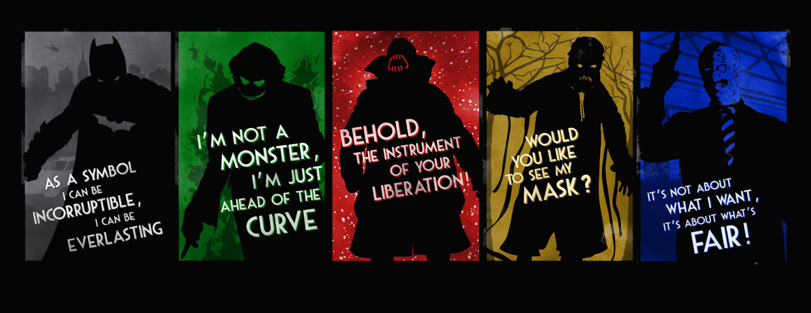
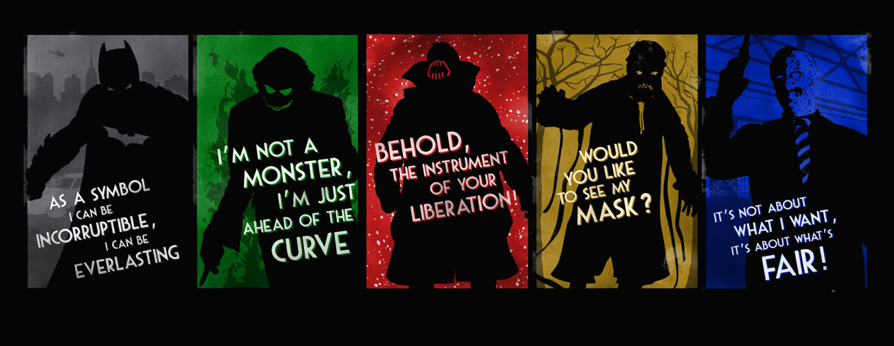

Au nom de ses parents assassinés,Bruce Wayne mène
une guerre éternelle contre les criminels de Gotham City.
il vengeur. Il est la nuit.
Il est Batman.

BATMAN AU CINEMA
Le personnage de Batman est un super héros de l'univers de DC Comics. Il a été crée par le dessinateur Bob Kane et le scénariste Bill Finger et apparait pour la première fois dnas lacmic book Detective Comics en 1939. Batman se différencie de Superman, alors héros majeur de DC, car il n'a aucun pouvoir. IL sera porté au cinéma pour la premièere fois en 1943 par Lewis Wilson et bénéficiera de nombreux reboot , donnant l'occasion à de multiples ancteur d'interpréter l'homme chauve souris.Voici les trois derniers :


Robert Pattinson
2022


Christian Bale
2006-2008-2012


Ben Affleck
2016-2017/2020-2023
 



NEMESIS
Batman souhaite éradiquer la criminalité de Gothan. C'est pourquoi, il affrontera la plupart du temps, des vilains sans capacités surnaturelles mais particulièrement violents ou psychopathes. Avec son introduction dans la Justice League il aura l'occasion de se mesurer à des antagonistes qui défient l'imagination et les lois de la physique. Parmis les derniers ennemis emblématiques que nous avons pu voir au cinéma. On retrouve :


The Riddler/Edward Nashton
Paul_Dano-2022


The Joker
Heath_Ledger-2008


Darkseid
Ray_Porter 2020
MULTIMEDIA

Batman Begins
IMDB: 8.2
Le jeune Bruce Wayne assiste impuissant au meurtre de ses parents. Profondément traumatisé, il grandit obnubilé par un désir de vengeance. La Ligue des ombres, une secte de guerriers ninja dirigée par Ra's al Ghul, se chargera de son entraînement. De retour chez lui à Gotham, avec l'aide de son majordome Alfred Pennyworth, Bruce Wayne se lance alors dans la lutte contre le crime sous le nom de Batman.

The Dark Knight
IMDB: 9
Batman abore une phase décisive dans sa guerre contre le crime .Avec l'aide du lieutnant e police Jim Gordon et du nouveau procureur Harvey Dent, il intreprend de démenteler les dernières organisations criminelles qui infestent les rues de la ville.L'association s'avère efficace, mais le trio se heurte bientot à un nouveau génie du crime qui répand la terreur et le chaos dans Gotham:Le Jocker

The Dark Knight Rises
IMDB: 8.4
Huit ans ont passé depuis que Batman a disparu,passant du statut de héros à celui de fugitif.Le "Chevalier Noir" a tout sacrifie pour le mieux. Pendant un certain temps, le mensonge a l'efft escompte:la criminalité de Gotham City est presque éliminée par le commissaire James Gordon avec l'unité anticrime d'Harvey Dent.Mais l'arrivée à Gotham de Bane, un terroriste masqué, chamboule l'ordre établi et pousse Bruce à sortir de l'exil qu'il s'est imposé.